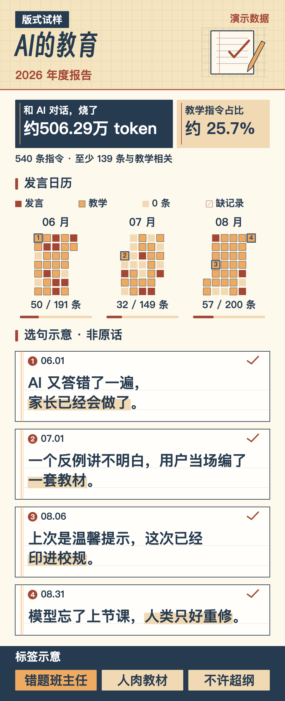
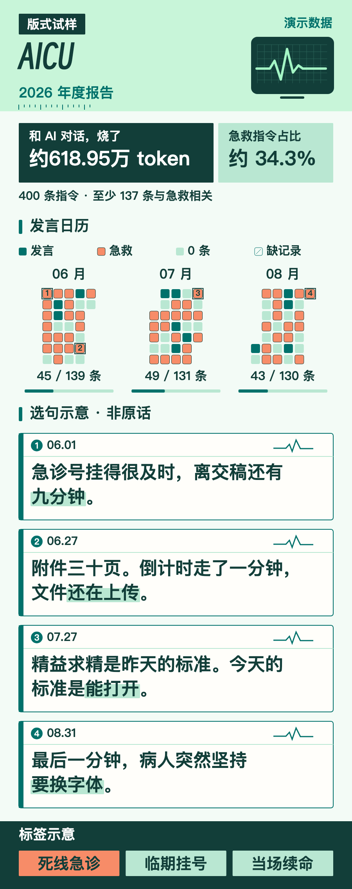
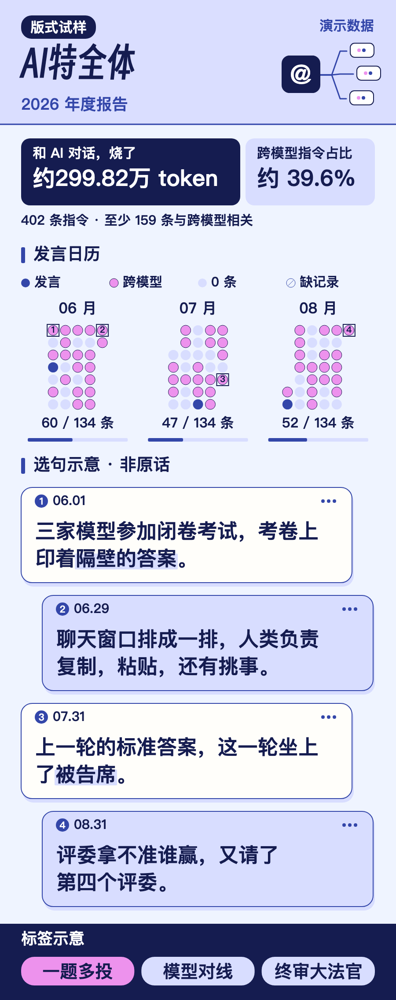
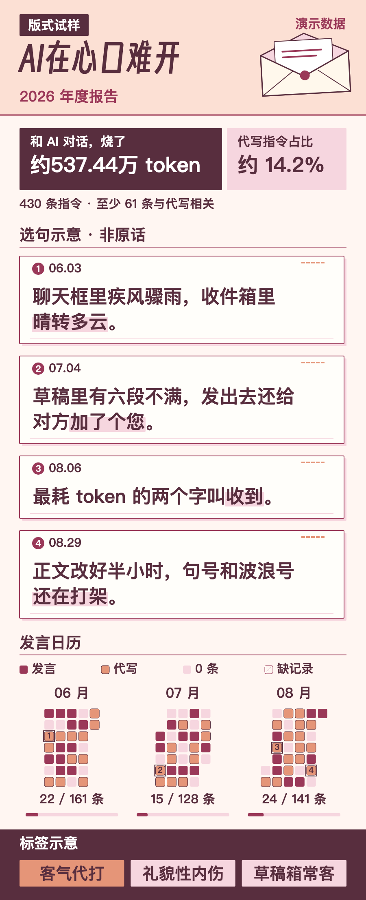
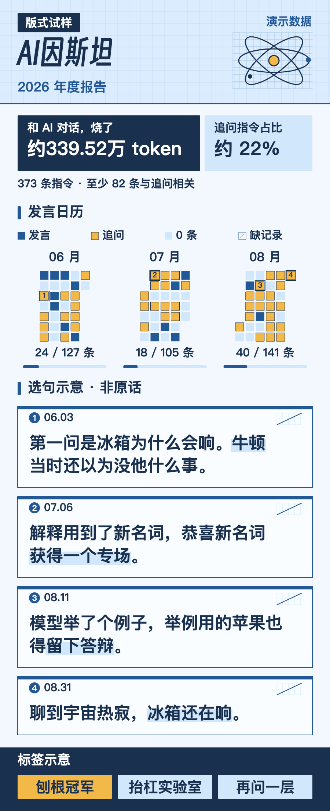
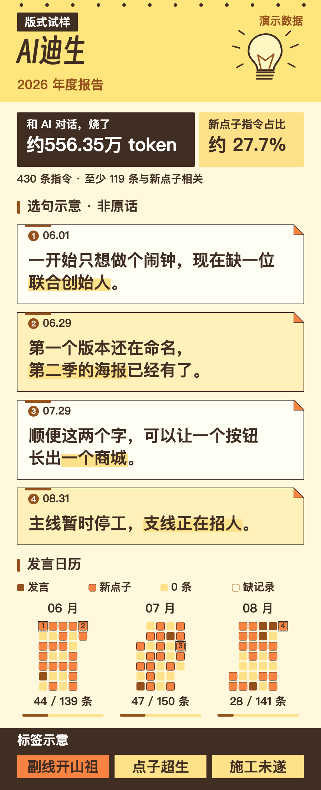
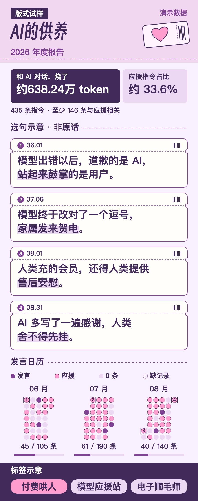
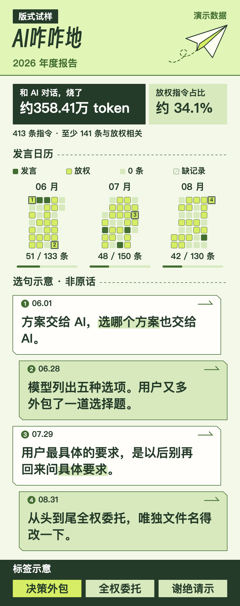

PUAI
下载不愿透露姓名的唐某 · 本人报告
唐某的 PUAI 是本人报告。其余八张使用演示数据，场景短句为原创示意。点图看全图。
不愿透露姓名的唐某 · 本人报告

AI 答错一道题，用户补写一页教案。

留给 AI 的时间，通常以分钟计。

同一道题，几个模型轮流上台。

心里的长篇大论，交给 AI 改成一句能发的。

上一个答案，只够再生出一个为什么。

一个点子没落地，下一个已经通电。

花自己的钱，给 AI 提供情绪价值。

连决定要不要请示，也想外包。